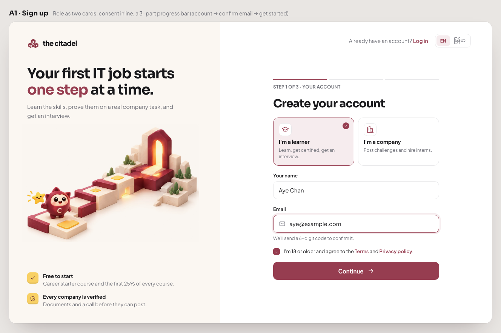
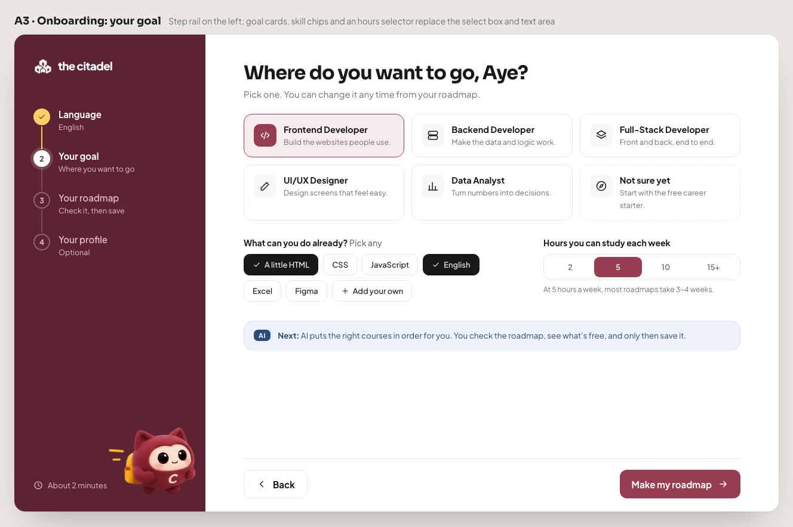
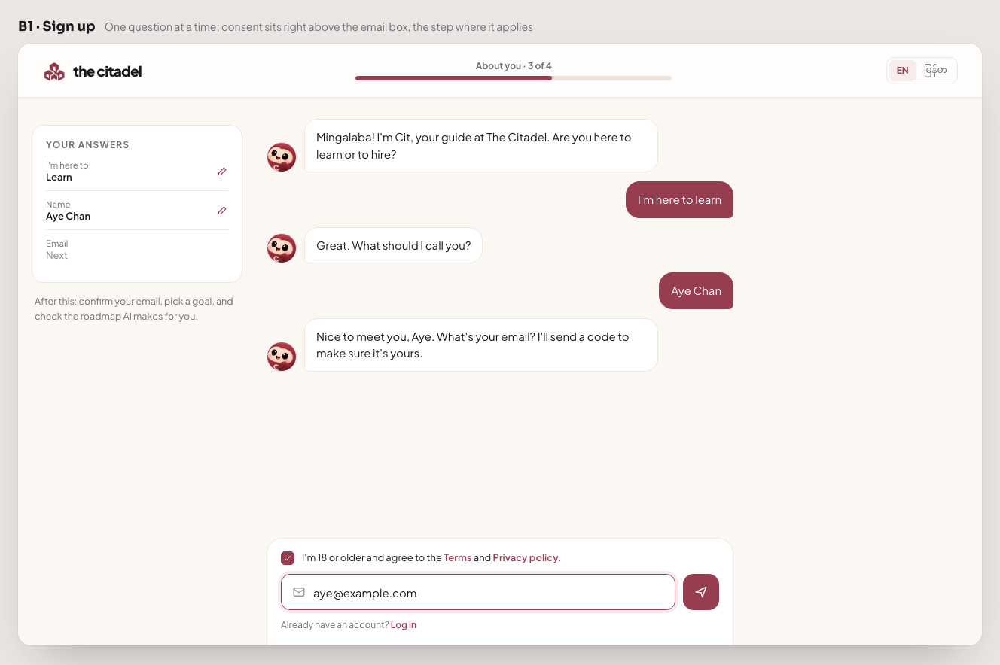
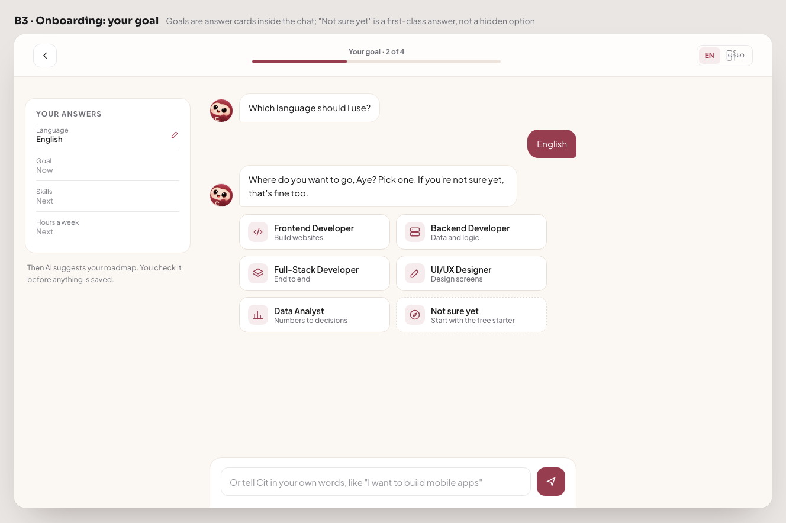
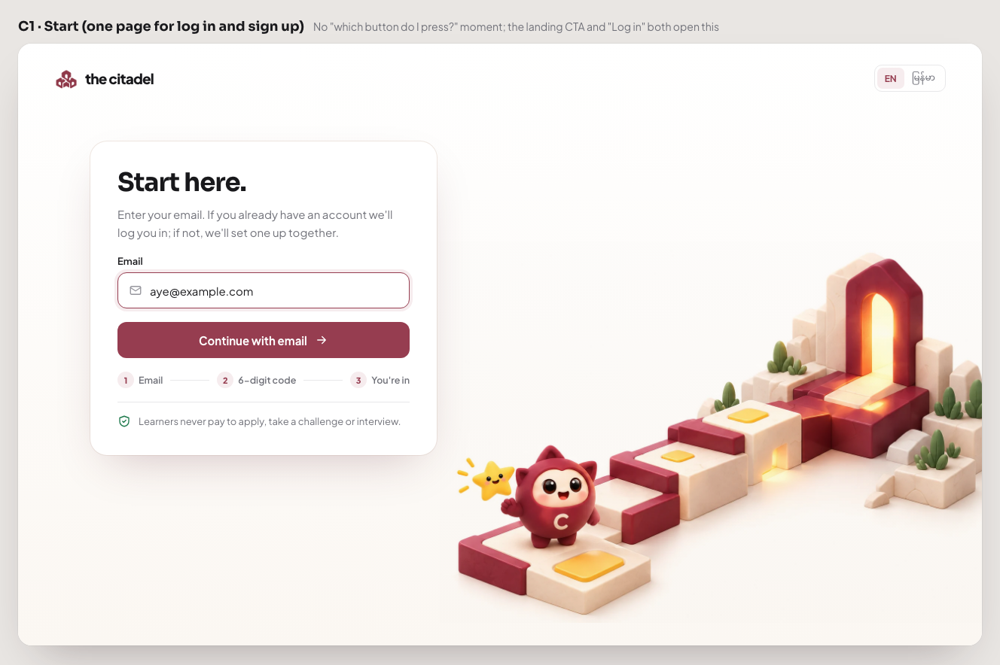
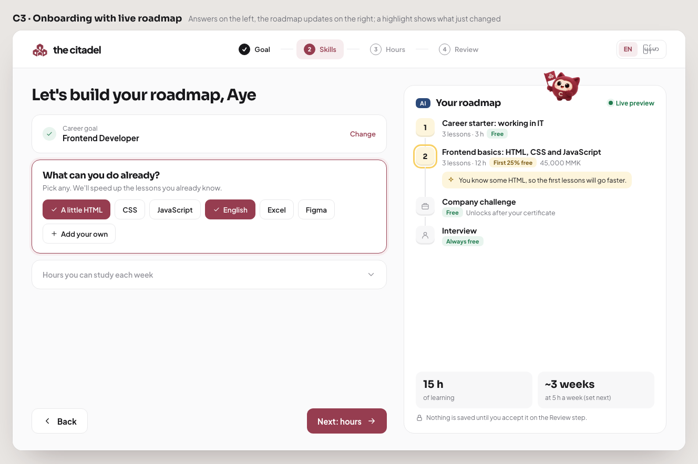

The Citadel · Sign up, log in and onboarding
All three follow the corrected flow in docs/citadel-flow-and-ia.md: choose role, accept terms (18+), confirm email with a code, then language, goal (or "not sure yet"), roadmap review and an optional profile. They differ in how the screens work, not only in looks.


Brand art and promises on the left, a short form on the right. Onboarding has a burgundy step rail.


The mascot asks one question at a time like a chat, with an editable "Your answers" card.


One email box decides log in or sign up. The roadmap builds itself beside the questions.